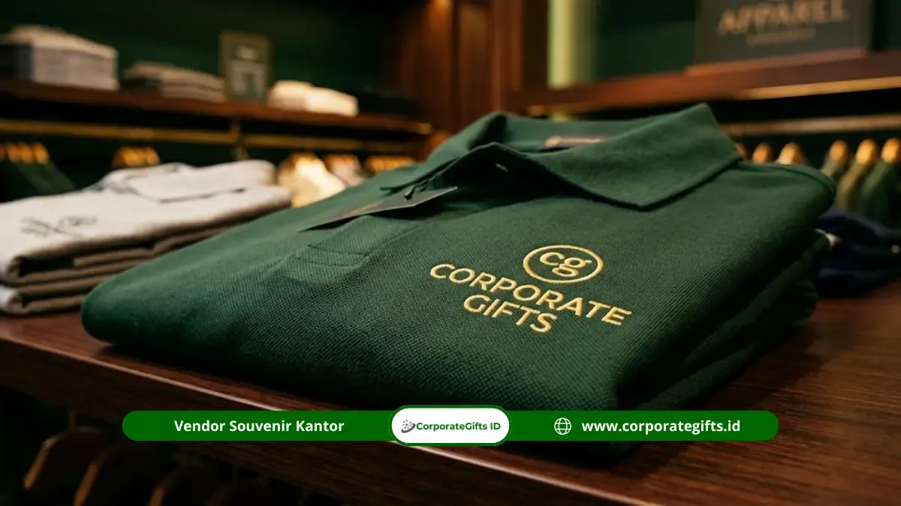

Corporate Gifts ID - Harga souvenir kantor per teknik cetak logo bervariasi tergantung pada tingkat kerumitan proses produksi dan teknologi yang digunakan: sablon dan pad printing adalah teknik paling ekonomis untuk volume massal, bordir dan heat transfer berada di kelas menengah untuk apparel, sedangkan laser engraving, UV printing, debossing, dan embossing tergolong premium karena membutuhkan mesin khusus atau proses manual presisi tinggi.
Poin Kunci Teknik Cetak Logo Souvenir Kantor:
- Efisiensi Skala Besar: Sablon dan pad printing memberikan efisiensi biaya tertinggi untuk pengadaan massal di atas 200 unit.
- Kesan Mewah pada Tekstil: Bordir komputer menghadirkan tekstur timbul yang awet pada polo shirt, topi, dan jaket korporat.
- Presisi Material Keras: Laser engraving memberikan hasil grafir permanen anti-luntur pada tumbler stainless dan pulpen metal.
- Eksklusivitas Kulit: Debossing dan embossing memberikan sentuhan mewah tanpa tinta pada notebook agenda dan gift box kulit PU.
Apa Itu Teknik Cetak Logo pada Souvenir Kantor?
Teknik cetak logo pada souvenir kantor adalah metode menempelkan atau membentuk identitas visual merek (brand identity) perusahaan pada permukaan produk, baik melalui media tinta, benang jahit, ukiran termal, maupun tekanan cetak panas.
Setiap metode cetak menghasilkan karakteristik visual, tekstur rabaan, dan daya tahan yang berbeda:
- Metode Berbasis Tinta (Sablon, Pad Print, UV Print): Menempelkan pigmen warna di lapisan luar material dengan ketajaman grafis tinggi.
- Metode Jahitan Benang (Bordir): Merajut logo secara langsung pada struktur serat kain tekstil.
- Metode Tanpa Tinta (Laser Engraving, Deboss, Emboss): Mengikis permukaan atau mengubah kontur material secara permanen sehingga tahan abrasi dan pencucian berulang.
Mengapa Teknik Cetak Logo Memengaruhi Harga Souvenir Kantor?
Teknik cetak logo memengaruhi total biaya pengadaan cinderamata karena setiap metode melibatkan investasi mesin, bahan baku pembantu, dan durasi pengerjaan yang berlainan:
- Biaya Setup Awal (Tooling & Mold): Pembuatan plat screen sablon, film cetak, atau cetakan logam (cliche) deboss memerlukan biaya di muka yang dibebankan pada total pesanan.
- Waktu Operasional Mesin: Laser engraving dan bordir membutuhkan waktu per unit yang lebih lama dibandingkan sistem sablon cepat.
- Jumlah Warna dan Separasi: Pada sablon manual, penambahan tiap warna logo membutuhkan screen terpisah yang melipatgandakan proses cetak.
- Jenis dan Permukaan Material: Mencetak pada permukaan lengkung atau material licin seperti termos stainless menuntut tinta primer dan mesin rotary khusus.

Aplikasi bordir komputer benang emas presisi tinggi pada kaos polo seragam korporat.
Jenis-Jenis Teknik Cetak Logo Souvenir Kantor
1. Sablon (Screen Printing) - Solusi Ekonomis Volume Besar
Sablon menekan tinta melalui kain kasa berpori (screen) ke permukaan produk datar seperti tote bag kanvas, blocknote kertas, dan tas spunbond. Sangat efisien untuk pesanan di atas 100 pcs dengan 1-2 warna solid.
2. Bordir Komputer (Embroidery) - Kesan Mewah pada Apparel
Bordir merajut benang poliester tahan luntur ke dalam kain menggunakan mesin multi-head otomatis. Sangat ideal untuk kaos polo seragam kantor, jaket hoodie, dan topi baseball promosi.
3. Laser Engraving - Ukiran Permanen Elegan pada Material Keras
Mengikis lapisan luar material logam, kayu, atau bambu menggunakan sinar laser presisi tinggi. Pilihan utama untuk tumbler stainless SUS 304, pulpen metal eksklusif, dan flashdisk kayu karena hasilnya permanen dan tidak akan pernah terkelupas.
4. UV Printing & Digital Printing - Detail Warna Kompleks & Gradasi
Menyemprotkan tinta digital yang langsung dikeringkan seketika oleh sinar ultraviolet. Sangat unggul untuk mencetak logo full color, foto, atau desain bergradasi rumit pada powerbank custom dan kartu flashdisk USB.
5. Heat Transfer & DTF - Cetak Full Color Praktis pada Kain
Mencetak desain digital pada film transfer lalu direkatkan ke serat kain menggunakan mesin press panas bertekanan tinggi. Solusi terbaik untuk kaos dan tas yang memerlukan desain grafis warna-warni tanpa batasan jumlah warna.
6. Debossing & Embossing - Tekstur Timbal-Balik Mewah pada Kulit
Debossing menekan logo ke dalam membentuk cekungan elegan, sedangkan embossing menonjolkan logo ke luar. Teknik standar emas untuk notebook agenda PU leather, gantungan kunci kulit, dan kotak hardbox kado VIP.
7. Pad Printing - Cetak Presisi pada Media Kecil & Melengkung
Menggunakan bantalan silikon lentur untuk mentransfer tinta ke permukaan tidak rata atau melengkung, seperti klip pulpen plastik, mug keramik, dan mouse komputer.
Tabel Perbandingan Harga Berdasarkan Kategori & Teknik Cetak
Berikut rangkuman indikatif kisaran harga souvenir kantor berdasarkan kategori produk, teknik cetak yang umum digunakan, dan estimasi batas minimum pemesanan (MOQ):
| Kategori Produk | Contoh Item Merchandise | Teknik Cetak Umum | Kisaran Harga / Pcs (Indikatif) | MOQ Umum |
|---|---|---|---|---|
| Alat Tulis & Kertas | Pulpen promosi, blocknote A5, notebook spiral | Sablon, Pad Print, Grafir Laser | Rp15.000 - Rp40.000 | 50 - 100 pcs |
| Tas & Pouch Promosi | Tote bag kanvas, spunbond, pouch serut | Sablon Manual, DTF Full Color | Rp25.000 - Rp60.000 | 50 - 100 pcs |
| Minuman & Tableware Standar | Mug keramik, botol minum plastik BPA-Free | Sablon Decal Bakar, Pad Print | Rp40.000 - Rp80.000 | 50 - 100 pcs |
| Tumbler Stainless Steel Premium | Tumbler vacuum SUS 304, smart LED tumbler | Laser Engraving, UV Print Rotary | Rp75.000 - Rp180.000 | 50 - 100 pcs |
| Aksesoris Teknologi & Gadget | Powerbank 10.000mAh, flashdisk kartu, wireless charger | UV Print Flatbed, Grafir Laser | Rp50.000 - Rp150.000 | 50 - 100 pcs |
| Apparel Korporat | Kaos polo katun pique, topi drill, kemeja bordir | Bordir Komputer, Sablon Plastisol, DTF | Rp60.000 - Rp150.000 | 24 - 50 pcs |
| Executive Corporate Gift VIP | Agenda kulit organizer, pen Parker grafir, gift set box | Debossing / Embossing, Laser Engraving | Rp150.000 - Rp350.000+ | 20 - 50 pcs |
| Plakat & Award Cinderamata | Plakat kristal 3D, plakat akrilik cor, award kayu | Grafir Laser 3D, Etsa Logam Kuningan | Rp150.000 - Rp400.000+ | Mulai 1 pcs |
Cara Memilih Teknik Cetak Logo yang Tepat
Agar alokasi anggaran promosi memberikan hasil yang optimal, pertimbangkan panduan seleksi berikut:
- Kesesuaian Material Produk: Gunakan laser engraving untuk logam/kayu, deboss untuk kulit PU, bordir untuk kain rajut, dan UV print untuk plastik akrilik.
- Kompleksitas Desain Logo: Jika logo memiliki gradasi warna halus, utamakan UV printing atau DTF. Untuk logo 1-2 warna tegas, sablon manual jauh lebih ekonomis.
- Tingkat Kepentingan Audiens: Hadiah untuk direksi dan klien VIP memerlukan teknik tanpa tinta (deboss/laser) yang terkesan eksklusif dan understated.
- Faktor Masa Pakai: Pilih teknik permanen tahan gores untuk produk harian seperti tumbler kerja dan tas ransel.
Kesalahan Umum dalam Memilih Teknik Cetak Logo
Hindari kesalahan berikut yang kerap terjadi saat proses pengadaan souvenir:
- Memaksakan Bordir pada Bahan Halus: Bordir pada kain terlalu tipis dapat membuat kain berkerut dan bolong.
- Mengabaikan Jumlah Warna pada Sablon: Menambah 4 warna sablon pada jumlah pesanan kecil bisa membuat biayanya lebih mahal daripada UV print.
- Memilih Sablon Biasa pada Logam Licin: Tinta sablon biasa mudah terkelupas pada stainless steel jika tidak melalui tahap primer oven.
- Format File Logo Beresolusi Rendah: Mengirimkan file JPG pecah menghambat proses cetak; selalu siapkan master logo berformat vektor (AI, EPS, atau PDF kurva).
Pertanyaan Seputar Harga & Teknik Cetak Logo (FAQ)
Kesimpulan Praktis dan Rekomendasi Pengadaan
Memilih teknik cetak logo yang tepat bukan sekadar mencari harga termurah, melainkan menyelaraskan antara karakter material produk, identitas grafis brand, dan durasi pemakaian yang diharapkan.
Konsultasikan kebutuhan branding merchandise kantor Anda bersama tim spesialis CorporateGifts.ID. Kami menyediakan layanan pembuatan preview digital mockup gratis dan panduan pemilihan teknik cetak industri terbaik. Dapatkan penawaran harga resmi melalui formulir permintaan penawaran harga hari ini juga.